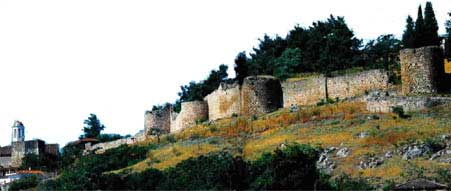

Το κάστρο του Διδυμοτείχου
 Η ονομασία Διδυμότειχο λέγεται ότι προήλθε από το διπλό κάστρο, το δίδυμο τείχος, που προστάτευε την πόλη. Το Διδυμότειχο αναδείχθηκε στα Βυζαντινά χρόνια σε μία από τις σημαντικότερες πόλεις της Θράκης και στη συνέχεια σε ισχυρή οχυρωμένη πόλη-κάστρο, επάνω στο λόφο του Καλέ. Τειχίσθηκε για πρώτη φορά από τον Ιουστινιανό (6ος αι.) και ενισχύθηκε από τον Κωνσταντίνο Ε΄ (8ος αι.), ενώ από το 813, όταν καταλήφθηκε από τον βούλγαρο τσάρο Κρούμο, χρησίμευσε ως τόπος εξορίας επιφανών βυζαντινών. Όταν καταλήφθηκε από τους Οθωμανούς υπήρξε έδρα του Μουράτ Α΄ (1361 -1369). Το 1912 και το 1915 το Διδυμότειχο καταλήφθηκε από το βουλγαρικό στρατό. Τέθηκε υπό τον έλεγχο γαλλικών στρατευμάτων με τη Συνθήκη του Νεϊγύ (1919) και αποδόθηκε στην Ελλάδα το 1920. | ||